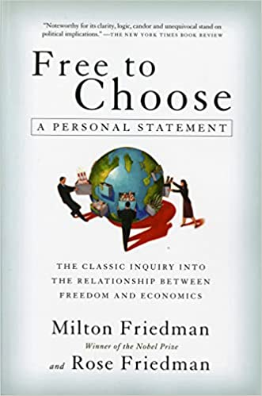

By Milton & Rose Friedman · 1980 · 338 pages
The 1990 Foreword, written a decade after publication, reflects on how dramatically the tide turned. Socialism collapsed on both sides of the Iron Curtain, but conventional practice had not caught up with conventional wisdom. Politicians cheered capitalism’s victory abroad while expanding socialist programs at home. “They know the words, but they have not learned the tune.” Government spending as a fraction of income stood at forty percent in 1980 and forty-two percent in 1988. Federal Register pages fell from 87,012 to 53,376, yet trade restraints grew rather than declined. “What appeared to many readers of the book ten years ago as Utopian and unrealistic will, we believe, appear to many new readers as almost a blueprint for practical change.”
The book has two parents: Capitalism and Freedom (1962) and a PBS television series, Free to Choose (ten episodes, 1980). It is less abstract than its predecessor, more nuts and bolts, influenced by public choice economics—Anthony Downs, James Buchanan, Gordon Tullock, George Stigler, Gary Becker. Both political and economic systems are treated as markets where outcomes are determined by self-interested participants, not by the social goals people claim to pursue.
The American miracle rests on two sets of ideas published in the same year. Adam Smith’s Wealth of Nations established that voluntary exchange, guided by the invisible hand of self-interest, coordinates the activities of millions without central direction. The Declaration of Independence established that individuals possess unalienable rights and that government exists to protect those rights, not to override them. These twin pillars— economic freedom and political freedom— reinforce each other. Economic freedom disperses power and prevents any single group from gaining enough leverage to crush political liberty. Concentrate both economic and political power in the same hands and you have what the Friedmans call “a sure recipe for tyranny.”
“By pursuing his own interest he frequently promotes that of the society more effectually than when he really intends to promote it.” —Adam Smith
The golden age of nineteenth-century freedom produced unprecedented prosperity. But success bred complacency. People forgot that concentrated government power is dangerous and began viewing government as a benevolent tool. The Great Depression—caused not by capitalism’s failure but by the Federal Reserve’s catastrophic mismanagement of the money supply—was misread as proof that free markets had failed. That misreading accelerated the march toward collectivism that had already begun among intellectuals.
The Friedmans introduce their most devastating concept early: the invisible hand in government. Smith showed that self-interest in markets promotes the public good. The Friedmans invert this: in government, a person who intends to serve the public interest by fostering intervention is “led by an invisible hand to promote private interests, which was no part of his intention.” This is not cynicism but an observable pattern—government programs consistently produce results opposite to their stated goals, and the chapters that follow constitute the evidence.
John Stuart Mill’s liberty principle provides the moral foundation: the only justification for interfering with someone’s freedom is to prevent harm to others. Over himself, over his own body and mind, the individual is sovereign. Friedrich Hayek’s Road to Serfdom provides the warning: we have not yet reached the point of no return, but we are traveling in that direction. The book is an argument that we are still free to choose which road to take.
Friedrich Hayek’s Road to Serfdom provides the warning that the path from economic intervention to totalitarianism is gradual and often paved with good intentions. The Friedmans insist we have not yet reached the point of no return. We remain free to choose whether to continue down the road to serfdom or reverse course. Economic freedom is essential for political freedom because it disperses power across millions of independent decision-makers, making it impossible for any single group to dominate. Combining economic and political power in the same hands is “a sure recipe for tyranny.”
The book was born from two parents: Capitalism and Freedom (1962) and a PBS television series of the same name (ten episodes, 1980). It is less abstract than its predecessor, more oriented toward practical policy, and deeply influenced by public choice economics—the insight that political actors, like market actors, are motivated by self-interest rather than abstract public goals.
Consider one statistic that captures the trajectory. At the time of the Declaration of Independence, nineteen out of twenty Americans worked in agriculture. By 1979, fewer than one in twenty fed 220 million people. This revolution was not planned by any government bureau. Nations that tried central direction of agriculture—Russia, China, India— employed a quarter to half their workers on farms yet could not avoid periodic starvation. The agricultural miracle was driven entirely by private initiative channeled through free markets.
There are exactly two ways to coordinate the economic activities of millions of people. The first is command—the army method, where orders flow from general to colonel to private. It works tolerably well in small groups with a single shared objective, though even armies supplement commands with voluntary cooperation. The second is voluntary exchange—the market method, more subtle but far more powerful for large-scale coordination. The Friedmans’ central claim is that voluntary exchange is a necessary condition for both prosperity and freedom. No society in history has achieved either without it as the dominant organizing principle. It is not sufficient—other conditions matter—but it is necessary.
Even the Soviet Union, supposedly the purest command economy, relied heavily on markets. Private agricultural plots constituted less than one percent of Soviet farmland yet produced roughly a third of total farm output. In labor markets, Soviet workers were not ordered to specific jobs—they applied and chose, much as in capitalist countries. Moonlighting was pervasive: a Moscow resident might wait months for a state repair service but could hire a moonlighter—often a state employee working on his own time—who would fix the problem promptly. Both parties were happy. The command economy could not function without these voluntary market elements operating in its shadow.
The most elegant illustration of the market’s power is Leonard Read’s essay “I, Pencil.” No single person on earth knows how to make a pencil. The wood comes from Oregon cedar, requiring saws and ropes and trucks. The graphite is mined in Ceylon. The brass ferrule requires zinc from one mine and copper from another. The eraser uses rapeseed oil from the Dutch East Indies combined with sulfur chloride. Thousands of people across dozens of countries cooperate to produce this trivial object—people who speak different languages, practice different religions, and might despise one another if they ever met. No central office directed them. No committee planned the operation. The price system coordinated it all, transmitting just enough information to each participant to induce just the right action.
“The only person who can truly persuade you is yourself. You must turn the issues over in your mind at leisure, consider the many arguments, let them simmer, and after a long time turn your preferences into convictions.” —Milton Friedman, Preface
Prices perform three inseparable functions. First, they transmit information —telling only the people who need to know, only what they need to know. A wood producer does not need to understand whether pencil demand rose because of a baby boom or because the government mandated fourteen thousand new forms. He only needs to know that someone will pay more for wood. Second, prices provide incentives to act on that information, and simultaneously provide the means to do so. A higher wood price gives the logger both the reason and the revenue to produce more. Third, prices determine the distribution of income. If income does not depend on what you produce, why work hard? Why search for the buyer who values your goods most? If a wildcatter like Red Adair earns the same whether he caps a runaway oil well or stays home, why risk his life?
You cannot separate these three functions. A Hungarian Marxist economist rediscovered Adam Smith’s invisible hand and tried to use prices for information and efficiency while preventing them from affecting income distribution. He failed in theory, as the communist countries failed in practice. When everybody owns something, nobody owns it and nobody maintains it. Soviet buildings looked decrepit within a year or two. Government factory machines broke down constantly. Citizens resorted to the black market for repairs. This is the tragedy of communal ownership —a problem no amount of central planning has ever solved.
A crucial clarification: self-interest is not myopic selfishness. It encompasses whatever interests the participants—the scientist advancing knowledge, the missionary converting infidels, the philanthropist bringing comfort to the afflicted. All are pursuing their interests as they see them. Economics does not assume an “economic man” who responds only to monetary stimuli. The invisible hand operates far beyond commerce —language itself developed the same way, with meanings attributed to words as needs arose and codified later by dictionaries. Scientific disciplines “just growed” because scholars found them convenient, not because any committee planned them.
The 1970s gasoline lines proved what happens when government jams the price signal. After the OPEC embargo, Germany and Japan —wholly dependent on imported oil—had no gas lines. The United States did, because government price controls held gasoline below market-clearing levels and allocated supplies by bureaucratic command rather than price signals. The result was surpluses in some areas and shortages with long lines in others. The Department of Energy, with twenty thousand employees and a ten-billion- dollar budget, was the institutional monument to this failure.
Inflation introduces what the Friedmans call “static” into the price system. When the price of wood rises, a producer cannot tell whether it reflects genuine increased demand for wood or merely general inflation. The information that matters is relative prices—the price of one good compared to another. High and variable inflation drowns that signal in noise, causing resources to be misallocated throughout the economy.
Adam Smith identified three proper duties of government: protecting society from external violence, protecting individuals from injustice by other members, and erecting public works that private enterprise would not undertake because the costs of toll collection exceed the benefits. The Friedmans add a fourth: protecting those who cannot be responsible for themselves—children and the insane. But the third duty is the most dangerous, because it can justify almost anything through the concept of “externalities.” Government measures themselves produce externalities through taxes, power accretion, and opportunities for citizens to exploit one another through political channels. Once government undertakes an activity, it is seldom terminated. Failure leads not to abolition but to expansion and larger budgets—a crucial asymmetry between government and markets.
Hong Kong serves as the modern exemplar. Fewer than four hundred square miles, four and a half million people, population density fourteen times Japan’s and one hundred eighty-five times America’s— yet one of the highest living standards in Asia. No tariffs, no minimum wage, no price controls, no government direction of industry. Government spending among the lowest in the world as a fraction of income. Low taxes preserved incentives—businessmen reaped the benefits of success and bore the full costs of failure. The irony: a British Crown colony followed policies diametrically opposed to Britain’s own welfare state.
The Friedmans identify what they call the “interested sophistry” problem: we each rail against special interests except when the special interest is our own. Every person believes what is good for him is good for the country. The result is a maze of restrictions that makes almost everyone worse off. “We lose far more from measures that serve other ‘special interests’ than we gain from measures that serve our ‘special interest.’”
Free trade commands near-universal support among economists regardless of ideology, yet tariffs have been the rule throughout history. Adam Smith put it simply: “What is prudence in the conduct of every private family, can scarce be folly in that of a great kingdom.” If a foreign country can supply a commodity cheaper than we can make it, better buy it from them. The Friedmans demolish three persistent trade fallacies. First, the goal of trade policy should not be “creating jobs” but creating productive jobs—we can create any number of jobs by digging holes and filling them. Second, exports are not “good” and imports “bad”—the opposite is true. We cannot eat, wear, or enjoy exports. Our gain from trade is what we import. Exports are the price we pay. Third, a “favorable balance of trade” is a misnomer. In your household, you would surely prefer to receive more goods while paying less for them, yet in trade statistics that is called “unfavorable.”
“Competition in masochism and sadism is hardly a prescription for sensible international economic policy!” —Milton Friedman, on retaliatory tariffs
The argument that low-wage foreign workers threaten high-wage American workers as a group is a fallacy rooted in confusing absolute and comparative advantage. Even if one country is more efficient at producing everything, both countries benefit from specializing in what they do relatively best. The lawyer who types twice as fast as his secretary should still practice law, not type. Exchange rates automatically adjust to reflect productivity differences—if Japanese goods were cheaper at every price, the yen would strengthen until trade balanced. Only three tariff arguments have any theoretical validity: national security (rarely justified in practice), infant industry (the “so-called infants never grow up”), and monopoly power (valid in theory but invites retaliation).
Free trade fosters peace. The century from Waterloo to World War I—when Britain led with near-complete free trade—was one of the most peaceful in human history. People traveled Europe without passports and emigrated freely. When governments intervene in trade, private disputes escalate into intergovernmental conflicts. Free trade also eliminates domestic monopolies more effectively than any antitrust law. With only three American automakers, one near bankruptcy, monopoly pricing was a genuine threat. Let the world’s automakers compete, and that threat vanishes. Only De Beers has ever maintained a global monopoly without government assistance.
What about the argument that foreign subsidies are unfair? If Japan subsidizes steel exports to the United States, who benefits? American consumers—they get cheap steel. The Japanese taxpayers suffer. “Was it noble of the United States to send goods as gifts in the form of Marshall Plan aid, but ignoble for foreign countries to send us gifts in the indirect form of goods sold below cost?” Subsidies are temporary; when they end, the market readjusts. The national security argument for tariffs is self-interest dressed up as patriotism—the steel industry has never presented cost estimates for alternative ways to provide security, such as stockpiling. “Sincerity is a much overrated virtue.”
Friedman’s prescription is bold: unilateral free trade, phased in over five years at an announced pace. “Few measures we could take would do more to promote the cause of freedom at home and abroad.” The retaliation argument—that we need tariffs because other countries have them— is “pure masochism and sadism.” Other countries’ tariffs hurt them. If we retaliate, we add harm to ourselves as well.
The evidence from central planning is devastating. East versus West Germany is the ultimate controlled experiment: same people, same blood, same civilization, same technical skill. One side erected walls with armed guards, dogs, and minefields to keep citizens in. The other side had brightly lit streets, free newspapers, and people who could speak without looking over their shoulders. Ludwig Erhard’s German economic miracle began on a single Sunday—June 20, 1948 —when he simultaneously introduced the Deutsche Mark and abolished almost all wage and price controls. He acted on a Sunday because the French, American, and British occupation offices were closed and he was sure they would countermand his orders. Within days, shops were full of goods. Within months, the economy was humming. Russia versus Yugoslavia told a similar story: Yugoslavia under Tito broke with Stalin, permitted private agricultural land, free markets for produce, and small private enterprises. Not free, and with a lower living standard than Austria, but paradise compared to Russia.
The chapter’s centerpiece is the comparison between Japan and India —the closest thing to a controlled experiment in economic policy. Both were ancient, sophisticated, hierarchical civilizations. Both experienced political revolutions led by dedicated leaders determined to modernize. India actually had more advantages: a British-trained civil service, modern factories, a railroad system, more foreign aid, and physical resources nine times Japan’s size. Japan was isolated for three centuries, had no foreign capital, and nobody who spoke a Western language.
The outcome was definitive. Japan dismantled feudalism, extended opportunity, improved living standards rapidly, and became a world power. India paid lip service to eliminating caste while inequality widened. Cultural explanations fail: early Western residents in Japan wrote that it would never become wealthy; Indians abroad—in Malaya, Hong Kong, Fiji, Panama, Britain—are dynamic entrepreneurs. The characteristics attributed to Indians reflect rather than cause their country’s stagnation. A fatalistic philosophy is an accommodation to stagnation, not its source.
The great irony is that each country adopted the British policies of its era. The Meiji rulers, who valued national power over individual freedom, adopted Adam Smith’s free-market policies—the prevailing wisdom in mid-nineteenth-century Britain. India’s leaders, who ardently valued individual freedom and democracy, adopted central planning—the prevailing wisdom in mid-twentieth-century Britain, the Britain of Harold Laski. Japan’s power-seeking rulers accidentally created freedom; India’s freedom-seeking leaders accidentally created control.
A striking experiment within the experiment: Chinese refugees who fled communism to Hong Kong in 1949 showed incredible initiative and drive. A new wave of immigrants from Red China thirty years later showed little initiative—they wanted to be told precisely what to do. Same race, same culture, same language. The difference: thirty years under communism had destroyed their entrepreneurial instincts. A few years in Hong Kong’s free market would restore them. The Friedmans note that the ballot box produces conformity without unanimity—you get a package of policies, some you favor and some you oppose. The marketplace produces unanimity without conformity—you get exactly what you chose. Use the ballot box only where conformity is truly essential.
Personal Independence Day—the day you stop working to pay government and start earning for yourself—fell on February 12 (Lincoln’s Birthday) in 1929. By 1979 it had moved to May 30. If trends continued, it would coincide with the Fourth of July around 1988. At corporate tax rates of forty-six percent, the federal government effectively owned forty-six percent of every corporation. “In terms of the ownership of corporate enterprise, we are about 46 percent socialist.”
Economic controls create a chilling effect that extends far beyond markets. Oil executives tongue-lashed by Senator Henry Jackson for “obscene profits” did not fight back or leave the room. Energy Secretary Schlesinger issued ultimatums: support the Administration’s crude oil tax or face tougher regulation and a possible drive to break up the oil companies. Academics dependent on government grants self-censor. Freedom is one whole—restricting it in one area corrodes it in all others. Amish farmers had property seized for refusing Social Security taxes that they also refused to accept. Church schools cited students as truants because teachers lacked state certification.
The Great Depression was the most consequential economic event of the twentieth century. Income was cut in half by 1933. Output fell by a third. Unemployment reached twenty-five percent. It spread worldwide—in Germany it helped Hitler rise to power, in Japan it strengthened the military clique, in China it accelerated hyperinflation and brought the communists to power. The conventional narrative blames private enterprise. The Friedmans’ counter-narrative, backed by their exhaustive research in A Monetary History of the United States, is that the depression was caused by a failure of government in the one area assigned to it since the founding: the management of money.
“For a great central banking system to stand by with a 70% gold reserve without taking active steps in such a situation was almost inconceivable and almost unforgivable.” —Ogden L. Mills, Secretary of the Treasury, 1932
The depression discredited the pre-existing view that monetary policy was a potent stabilizer. Opinion swung to “money does not matter.” Keynes offered an alternative theory that justified government intervention, captured the economics profession, and gave intellectual cover to expanding government for decades to come. The Smoot-Hawley tariff of 1930 may have worsened the depression’s severity by triggering retaliatory tariffs worldwide.
Understanding the disaster requires understanding the system it broke. Under fractional reserve banking, banks keep only a few dollars of cash per hundred dollars of deposits. This works perfectly as long as everyone remains confident. If everyone tries to withdraw at once—the equivalent of shouting “fire” in a crowded theater—the system collapses. In 1907, banks held roughly twelve dollars of cash per hundred of deposits. Every dollar converted from deposits to cash forced seven additional dollars of deposit reduction. The Panic of 1907 produced cascading bank runs, but the private banking system applied a drastic cure—restricting payments, refusing to pay cash on demand. It was harsh but it worked. The runs stopped, recovery began within months, and the recession lasted only thirteen months.
The Federal Reserve Act of 1913 was supposed to prevent future panics by creating a “lender of last resort” with an emergency printing press. Under Benjamin Strong, head of the New York Federal Reserve Bank from inception until his death in 1928—described as “a genius, a Hamilton among bankers”—the system worked well. Through the 1920s it served as an effective balance wheel, keeping inflation low and growth stable. It was widely trumpeted that the business cycle was dead.
Strong’s death in 1928 unleashed a power struggle between the New York Fed and the Washington Board that proved catastrophic. The stock market crash of Black Thursday, October 24, 1929, was dramatic but not the beginning—business activity had peaked in August. The crash reflected growing difficulties plus the puncturing of a speculative bubble. The Fed, instead of expanding the money supply as it had in previous recessions, allowed it to decline 2.6 percent through October 1930.
The pivotal moment came on December 11, 1930, with the failure of the Bank of United States—the largest commercial bank ever to fail at that time. It was actually a sound bank that eventually paid depositors eighty-three and a half cents on the dollar. Its name misled people into thinking it was an official institution. A rescue plan collapsed when the New York Clearing House withdrew at the last moment, partly due to anti-Semitism—the bank was Jewish-owned and served the Jewish community. Three hundred fifty-two banks failed in December 1930 alone.
Here is the Friedmans’ most painful irony: had the Federal Reserve never been established, the 1907 solution—restriction of payments—would have been applied. More drastic in the short term, it would have prevented the cascading failures of 1931–33. The Fed’s existence lulled the banking community into believing it would handle the crisis. But the Fed “stood idly by and let the crisis take its course.” In September 1931, when Britain abandoned the gold standard, the Fed responded—after two years of severe depression—by raising the discount rate, the sharpest increase in its history, to prevent gold outflows. The domestic effect was catastrophically deflationary.
The final numbers are staggering. Twenty-five thousand commercial banks existed in mid-1929. By early 1933, only eighteen thousand remained. After the nationwide bank holiday declared by Roosevelt on March 6, only about fifteen thousand reopened. Ten thousand banks vanished in four years. For every three dollars of deposits and currency in circulation in 1929, less than two remained in 1933—“a monetary collapse without precedent.” The FDIC, established in 1934, was the reform that actually ended banking panics. Depositors no longer needed to run because their deposits were guaranteed. Since 1934, there have been bank failures but no banking panics of the old style.
The Fed’s catastrophic failure produced a gain in its own power. The myth that private enterprise had failed led to giving the Board more control over regional banks. The Board moved from the Treasury Building into “a magnificent Greek temple” on Constitution Avenue. Regional bank heads lost the title “Governor” (renamed “President”) while Board members took the title for themselves. “In one respect the System has remained completely consistent throughout. It blames all problems on external influences beyond its control and takes credit for any and all favorable occurrences.”
The 1932 election was a watershed. Before it, Republicans held the presidency for fifty-six of the previous seventy-two years. After it, Democrats dominated for the next half-century. More consequentially, government spending went from never exceeding twelve percent of national income (outside wartime) to never falling below twenty percent—and exceeding forty percent by 1979. Franklin Roosevelt campaigned on cutting government waste and balancing the budget, berating Hoover for extravagance. Meanwhile, his “brain trust” of Columbia University academics was devising the New Deal, reflecting the intellectual shift from individual responsibility to belief in centralized government and “social responsibility.”
“The repeated failure of well-intentioned programs is not an accident. It is deeply rooted in the use of bad means to achieve good objectives.” —Milton Friedman
World War II’s effect on public attitudes was the “mirror image” of the depression’s. The depression convinced people capitalism was defective; the war convinced them centralized government was efficient. Both conclusions were wrong. Running a war economy with a single overriding purpose shared by nearly all citizens is fundamentally different from permanently controlling an economy shaped by “enormously varied and diverse objectives.” The institutional monument was HEW (Health, Education and Welfare)—established in 1953 with a two- billion-dollar budget, less than five percent of defense spending. By 1978 its budget had reached $160 billion, one and a half times total military spending—the third largest budget in the world after the U.S. government as a whole and the Soviet Union. One in a hundred Americans worked in the HEW empire.
Bismarck in 1880s Germany was the first to introduce comprehensive social security on a large scale. His motives combined paternalistic concern for workers with shrewd politics—he wanted to undermine the Social Democrats. The Friedmans identify the crucial insight: aristocracy and socialism share a belief in centralized rule by command. They differ only in who should rule—an elite by birth or experts by merit. Both profess to know the public interest better than ordinary people. Both end up promoting the interests of their own class. W. Allen Wallis captured the twentieth-century evolution: socialism, “intellectually bankrupt after more than a century of seeing one after another of its arguments for socializing the means of production demolished—now seeks to socialize the results of production.”
Social Security is the welfare state’s crown jewel and its most revealing failure. The Friedmans expose its “Orwellian doublethink.” Payroll taxes are labeled “contributions”—compulsory is voluntary. Trust funds are tiny, consisting only of promises by one branch of government to pay another. The program is not insurance—the relationship between what you pay in and what you get back is “extremely tenuous.” The Friedmans call it “a greater triumph of imaginative packaging” than any product in commercial history: the combination of an unacceptable tax and an unacceptable benefit program into something “widely regarded as one of the greatest achievements of the New Deal.”
The tax itself is regressive—a flat rate on wages up to a maximum, bearing most heavily on low incomes. And the system transfers wealth from poor to rich, not the reverse. Poor children start working and paying taxes earlier. Poor adults have shorter life spans and collect benefits for fewer years. The demographic trajectory is alarming: seventeen workers per beneficiary in 1950, three by 1970, at most two by the early twenty-first century. Social Security is “a one-sided compact between the generations, foisted on generations that cannot give their consent…more like a chain letter.” This analysis leads to Director’s Law, formulated by George Stigler: “Public expenditures are made for the primary benefit of the middle class, and financed with taxes which are borne in considerable part by the poor and rich.”
Government housing programs destroyed more dwelling units than they built. Urban renewal demolished four homes, most occupied by blacks, for every one it built—most of those for middle- and upper-income whites. The program was aptly nicknamed “Negro removal.” Pruitt-Igoe in St. Louis won an architectural prize, then deteriorated so badly that part of it had to be blown up. Dr. Max Gammon’s “theory of bureaucratic displacement,” developed from studying the British NHS, states that in a bureaucratic system, increased expenditure is matched by a fall in production. NHS hospital staffs grew twenty-eight percent while beds occupied daily fell eleven percent. No new hospitals were built in the NHS’s first thirteen years.
The Friedmans’ most famous framework is the four categories of spending. Category I: you spend your own money on yourself —strong incentive to economize and to get value (supermarket shopping). Category II: you spend your own money on someone else—you economize but care less about value to the recipient (Christmas gifts). Category III: someone else’s money on yourself—no incentive to economize, strong incentive to get your money’s worth (expense-account lunches). Category IV: someone else’s money on someone else—no incentive to economize or get value (bureaucrat spending on welfare recipients). All government welfare programs fall into Category III or IV. This is the fundamental reason they fail.
The poor lack not only market skills but political skills. Once well-meaning reformers pass a program and move on to their next cause, the poor are “left to fend for themselves and will almost always be overpowered by the groups that have already demonstrated a greater capacity to take advantage of available opportunities.” If one hundred dollars of someone else’s money is up for grabs, it pays to spend up to one hundred dollars of your own to capture it. These lobbying costs are pure waste—they may even exceed the transfer itself. Category IV spending corrupts both sides, creating “God-like power” in one group and “childlike dependence” in the other. The capacity for independence atrophies through disuse.
The Friedmans’ proposed solution is the negative income tax—replacing all welfare programs with a single cash transfer to people below a threshold. It preserves the incentive to work (you keep a portion of every dollar earned), eliminates the massive bureaucracy, and treats people as responsible individuals rather than wards of the state.
Three meanings of “equality” have competed for dominance in American history. Equality before God— Thomas Jefferson’s meaning in the Declaration—asserts that every person has unalienable rights regardless of natural differences in ability, temperament, or circumstance. Liberty is part of this definition, not in conflict with it. Equality of opportunity—the meaning that dominated after the Civil War—holds that no arbitrary obstacles should prevent people from pursuing the positions their talents fit them for. This, too, is perfectly consistent with liberty. The third meaning, equality of outcome, demands that everyone finish the race at the same time. It is in direct conflict with liberty, because it requires someone to decide what is “fair” and to impose that decision on others by force.
“There exists also in the human heart a depraved taste for equality, which impels the weak to attempt to lower the powerful to their own level, and reduces men to prefer equality in slavery to inequality with freedom.” —Alexis de Tocqueville
Every attempt to make equality of outcome the overriding principle of social organization has ended in a state of terror—Russia, China, Cambodia. Even the less extreme measures taken in Western countries have restricted individual liberty without achieving their objectives. The Friedmans pose a sharp ethical question: people resent the inheritance of property but not the inheritance of talent. Yet from an ethical standpoint, what is the difference? A parent can help a child through education, through setting up a business, or through leaving property. If the state permits you to spend money on riotous living, should it prevent you from leaving it to your children?
The baccarat analogy crystallizes the argument. Players start with equal piles of chips. By evening’s end, some are winners and some are losers. If the winners were required to repay the losers, nobody would play—not even the losers. Life works the same way. We all make decisions involving chance— occupation, marriage, investments. If we bear the consequences, we make the decisions. If someone else bears the costs, they will restrict our choices. It is no accident that increasing government intervention has gone hand in hand with the drive for “fair shares for all.”
The system of personal responsibility gave Henry Ford, Thomas Edison, and John D. Rockefeller the incentive to transform society. Their fortunes came not from exploitation but from developing new products and services. The resulting addition to the community’s wealth amounted to many times the wealth the innovators accumulated—and those fortunes were then largely devoted to philanthropy. Chicago’s great cultural institutions of the 1880s–1890s—the Art Institute, the Newberry Library, the Chicago Symphony, the University of Chicago, the Field Museum— were all established by businessmen, privately funded but designed for the whole city.
Britain’s egalitarian experiment provides the cautionary tale. Top tax rates reached ninety-eight percent on property income and eighty-three percent on earned income. The result was not equitable redistribution but the creation of new privileged classes—bureaucrats with secure, inflation- protected jobs; trade union aristocrats who were the highest-paid laborers in the country; and “new millionaires” who were simply the cleverest at evading the law. The drive for equality failed because it went against “one of the most basic instincts of all human beings”—Adam Smith’s “uniform, constant, and uninterrupted effort of every man to better his condition.” When the law contradicts what most people regard as moral, they break it. This disrespect spreads to all laws. Britain’s rising criminality may be a consequence.
The great achievements of Western capitalism benefited ordinary people far more than the wealthy. The rich in Ancient Greece had running servants instead of running water. Ready-to-wear clothing, supermarkets, modern transportation, television—all these redounded primarily to the ordinary person. John Stuart Mill wrote in 1848 that mechanical inventions had not yet lightened the day’s toil of any human being. No one could say that by 1980. To find people engaged in backbreaking toil, you had to visit the non-capitalist world.
Israel’s kibbutzim provide the strongest test case. Egalitarian communes are high-status in Israeli society, not stigmatized. Yet never more than about five percent of the Jewish population has chosen kibbutz life—an upper estimate of the fraction of people who would voluntarily choose a system enforcing equality of outcome. Irving Kristol’s “new class”—bureaucrats, academics on government grants, think-tank staffers, journalists—are the most ardent preachers of equality yet among the highest-paid in the community. Like the Quakers, “they came to the New World to do good, and ended up doing well.”
The chapter’s thesis is definitive: “A society that puts equality—in the sense of equality of outcome—ahead of freedom will end up with neither equality nor freedom. On the other hand, a society that puts freedom first will, as a happy by-product, end up with both greater freedom and greater equality.” Nowhere is the gap between rich and poor wider than in societies that do not permit the free market to operate—whether feudal societies, centrally planned economies, or countries where central planning was introduced in the name of equality. Russia remains “a country of two nations.” China’s inequality was more acute in 1957 than in any large nation except perhaps Brazil.
American schooling was mostly private and voluntary before the 1840s—and it was practically universal. The campaign for “free” (tax-funded) schools was led not by dissatisfied parents but by teachers and government officials. Horace Mann, the father of American public education, led the crusade from his position as secretary of the Massachusetts State Board of Education. E. G. West’s research demonstrates that in both the United States and Britain, the government takeover of schools was driven by producers (teachers, administrators, intellectuals), not consumers (parents). In Britain, schooling was near-universal before compulsory attendance was enacted in 1880 or fees were abolished in 1891. West concludes that the government takeover reduced quality and diversity.
Gammon’s Theory of Bureaucratic Displacement applies with full force. From 1971 to 1977, total professional staff in U.S. public schools rose eight percent, cost per pupil rose fifty-eight percent in dollars (eleven percent after inflation), but the number of students fell four percent, the number of schools fell four percent, and quality dropped as measured by declining standardized test scores. Input went up; output went down. Supervisors grew forty-four percent while teachers grew only fourteen percent. In schooling, parents and children are the consumers, teachers and administrators the producers. Centralization has systematically increased producer power while reducing consumer choice.
“Public school systems are protected public monopolies with only minimal competition from private and parochial schools. A monopoly need not genuinely concern itself with these matters.” —Kenneth B. Clark
The upper-income classes retain their freedom: they can send children to private schools (paying twice—once in taxes, once in tuition) or choose where to live based on school quality. The inner-city poor are trapped, “probably more disadvantaged in respect of schooling than in any other area of life with the possible exception of crime protection.” The tragedy is that a system dedicated to giving all children equal opportunity has in practice exacerbated stratification. Per-pupil spending is often as high in inner cities as in wealthy suburbs, but in the suburbs almost all the money goes to education; in inner cities, much goes to preserving discipline and repairing vandalism.
The Friedmans’ solution is the voucher plan: give every parent a voucher worth $1,500 to $2,000 redeemable at any approved school, public or private. The same principle as the GI bills. Schools would compete for students; parents would gain choice. Currently, only churches can compete with “free” government schools because they subsidize. Vouchers would open a vast market. St. John Chrysostom’s in the Bronx showed what was possible: children two grades ahead of public school peers at far lower cost per pupil. Harlem Prep turned dropouts into college students—until the Board of Education took it over and quality declined.
On the racial issue, the Friedmans argue that vouchers would moderate racial conflict, not exacerbate it. Integration has been most successful when it resulted from choice, not coercion. Nonpublic schools have often been in the forefront of the move toward integration. Violence in public schools is possible only because victims are compelled to attend. Give them effective freedom to choose and students —black and white, poor and rich—would desert schools that could not maintain order. Vouchers would eliminate forced busing, which a large majority of both blacks and whites oppose.
The Alum Rock experiment in California—the only voucher experiment actually carried out—was hobbled by restrictions (public schools only, no parental add-ons), yet it still produced dramatic results. McCollam School went from thirteenth to second place in its district on test scores simply by giving parents choice. Then the educational establishment ended the experiment. Dennis Gee, a Kent headmaster and union secretary, captured the establishment’s attitude perfectly: “I’m not sure that parents know what is best educationally for their children.”
In higher education, the equity scandal is even more egregious. Government subsidies transfer money from poor to rich. A Florida study found that only the top income class received net benefits from public higher education—sixty percent more than they paid in taxes. The bottom two classes paid forty percent more than they received. Families without children in California public higher education (who had the lowest average income) bore a net cost of 8.2 percent of their income. The Friedmans call this “the most inequitable” government program they know of—“those of us who are in the middle- and upper-income classes have conned the poor into subsidizing us on the grand scale.”
Friedman’s alternative to government subsidies is equity financing —advancing students the funds they need in exchange for a specified percentage of their future earnings, like buying a share in a person’s earning prospects. Successful graduates would repay more, compensating for unsuccessful ones, making the whole system self-financing. The payments could be combined with income tax collection at minimal administrative cost.
The Carnegie Commission on Higher Education exemplifies regulatory capture in academia. Fourteen of its eighteen members were from higher education institutions. It recommended more government subsidies despite admitting the perverse redistributive effects. “What would the academic world say about a steel industry commission, fourteen of whose eighteen members were from the steel industry, which recommended a major expansion in government subsidies to the steel industry?”
The Friedmans identify a recurring pattern they call the natural history of government intervention. A real or fancied evil generates public demands. A coalition forms consisting of sincere reformers and equally sincere interested parties. Their incompatible objectives—low prices for consumers, high prices for producers—are glossed over with rhetoric about “the public interest.” Congress passes a law granting discretionary power to a new agency. The reformers experience a glow of triumph and move on to new causes. The interested parties go to work making sure the power serves their benefit—and they generally succeed. Success breeds problems requiring broader intervention. Bureaucracy compounds the distortion. In the end, the effects are precisely the opposite of the reformers’ objectives and often do not even serve the original special interests. Yet the activity is so firmly established that repeal is inconceivable. New legislation is called for to fix the problems produced by the earlier legislation, and a new cycle begins.
“The Commission is, or can be made, of great use to the railroads. It satisfies the popular clamor for a Government supervision of railroads, at the same time that that supervision is almost entirely nominal.” —Attorney General Richard Olney to railroad president Charles Perkins, 1892
The Interstate Commerce Commission, established in 1887, illustrates every stage. Created by a coalition of sincere reformers and railroads, it quickly served the railroads’ interests. It solved the long-haul/short-haul pricing problem by raising long-haul rates to match short-haul rates—everybody except the customer was happy. When trucks emerged as competitors in the 1920s, the railroads successfully lobbied to bring trucking under ICC control via the Motor Carrier Act of 1935. Of 89,000 initial applications for operating certificates, only about 27,000 were approved. By 1974, the number of firms had fallen to 14,648 while tons shipped had increased twenty-seven-fold. ICC certificates had an aggregate value of two to three billion dollars —wealth corresponding solely to a government- granted monopoly position. Eliminating ICC regulation would have reduced shipping costs by approximately three-quarters.
Air travel repeated the pattern. The Civil Aeronautics Board controlled nineteen domestic trunk lines in 1938; even fewer existed by 1979 despite enormous growth in air travel. But Freddie Laker’s price-cutting across the Atlantic and the personality of Alfred Kahn at the CAB produced the first major move away from government control. Its dramatic success —lower fares and higher airline earnings—encouraged a broader movement toward deregulation.
The FDA after the 1962 Kefauver amendments provides the most devastating case study. New drug introductions fell by more than fifty percent. The cost of developing a new drug rose from roughly half a million dollars and twenty-five months in the 1950s to fifty-four million dollars and eight years by 1978—a hundredfold cost increase against a mere doubling of general prices. The “drug lag” meant that many more drugs were available in Britain than in the United States, and Dr. William Wardell estimated that beta blockers available abroad but not in America could have been saving ten thousand lives per year.
The FDA’s behavior is not a bug but a feature—an inevitable consequence of its institutional incentives. An official who approves a drug that causes harm gets his name on every front page. An official who rejects a drug that could save thousands of lives faces no consequences—the people who would have been saved are not around to protest. The “barking cats” analogy is Friedman at his sharpest: “What would you think of someone who said, ‘I would like to have a cat provided it barked’? The way the FDA now behaves is not an accident but a consequence of its constitution in precisely the same way that a meow is related to the constitution of a cat.” This is the fundamental error of most reformers: the belief that social organisms can be shaped at will.
The Consumer Products Safety Commission’s Tris episode is a cautionary tale in miniature. The CPSC required flame-retardant children’s sleepwear. The cheapest way to comply was impregnating fabric with a chemical called Tris. Soon ninety-nine percent of all children’s sleepwear was treated with it. Then Tris was discovered to be a potent carcinogen. The CPSC banned it and claimed credit for protecting the public—from a danger that existed solely because of its own earlier mandate. Had the market been left alone, Tris would have been introduced gradually, allowing time for the carcinogenic properties to surface before millions of children were exposed.
Ralph Nader’s Corvair, the most dramatic episode in the consumer protection movement, exemplifies how misleading the campaign has been. Ten years after Nader declared the car “unsafe at any speed,” a government agency spent a year and a half testing it and concluded that it “compared favorably with the other contemporary vehicles used in the tests.” Corvairs became collectors’ items. But to most people, even the well informed, the Corvair remains “unsafe at any speed.”
On the environment, the Friedmans reject the false choice of “pollution versus no pollution.” Zero pollution would require abolishing automobiles and most economic productivity. The real question is the right amount—where the gain from reducing pollution a bit more just balances the sacrifice of other goods. They favor effluent charges (pollution taxes) over regulatory mandates—cheaper, more effective, and providing objective evidence of costs. The energy crisis of the 1970s was entirely government-created: price controls on domestic oil subsidized imports from OPEC while penalizing domestic production. Germany and Japan, wholly dependent on imported oil, had no gas lines because they had no price controls.
The market protects consumers through competition, middlemen who monitor quality (department stores), brand names that represent accumulated reputation, and private testing organizations like Consumers Union. The Ford Edsel—promoted by one of the most expensive advertising campaigns in history—proves that advertising cannot manipulate consumers into buying what they do not want. The real objection of most critics of advertising is not that it manipulates taste but that the public has tastes the critics dislike.
The improvement in workers’ living standards over the past two centuries was not caused by labor unions or government regulation. Only three percent of American workers were unionized in 1900; fewer than one in four today. Government regulation was minimal before the New Deal. Yet living standards improved enormously. The real protection for workers is competition among employers for their services—the existence of alternative employers from whom they can seek employment. A worker is protected from his employer by the existence of other employers for whom he can go to work. An employer is protected from exploitation by employees by the existence of other workers he can hire. This reciprocal competition is the market’s great equalizer.
“We regard the minimum wage rate as one of the most, if not the most, antiblack laws on the statute books.” —Milton Friedman
Unions benefit some workers at the expense of others. A successful union reduces the number of jobs available in its occupation. Workers displaced by higher union wages are forced into non-union occupations, increasing the labor supply there and pushing those wages down. About ten to fifteen percent of workers have been able to raise their wages ten to fifteen percent above what they would otherwise earn, at the cost of reducing the wages of the remaining eighty-five to ninety percent by about four percent. Higher wages for the already highly paid; lower wages for the low-paid. Union wage gains cannot come from corporate profits—after-tax corporate profits are only about six percent of national income, far too small to fund union wage increases even if every cent were absorbed.
Union power rests on three mechanisms. First, enforcing high wage rates with government help—the Davis-Bacon Act requires all federal contractors to pay “prevailing wages,” which in practice means the highest union rates regardless of area. Second, restricting entry through licensure—the AMA controlled physician numbers for decades. Third, collusion with employers— John L. Lewis and the United Mine Workers controlled coal output by calling strikes whenever above-ground stockpiles threatened to force down prices, splitting the cartel gains with operators. As a coal company vice-president admitted, the union’s efforts to “stabilize the bituminous coal industry and have it operate on a profitable basis” had been “a bit more efficacious than the endeavors of coal operators themselves.”
The Hippocratic Oath is the world’s oldest union contract. Its noble ideals conceal a closed-shop provision (“I will hand on precepts, lectures and all other learning to my sons, to those of my teachers and to those pupils duly apprenticed and sworn, and to none others”) and a market- sharing agreement (“I will not cut, even for the stone, but will leave such procedures to the practitioners of that craft”). The American Medical Association has been one of the most successful unions in the country, keeping down physician numbers and preventing competition for decades. During the 1930s, despite a flood of highly trained refugee physicians from Nazi Germany and Austria, the number admitted to American practice was no larger than before Hitler.
The minimum wage requires employers to discriminate against persons with low skills. A teenager whose services are worth two dollars an hour cannot legally be hired at $2.90 an hour. The result is unemployment, not higher income. Black teenage unemployment runs thirty-five to forty-five percent, compared with fifteen to twenty percent for white teenagers. The gap appeared after sharp minimum wage increases. Pressure for higher minimum wages comes not from the poor but from organized labor—whose members earn far above the minimum—as a way to protect themselves from low-wage competition.
The Davis-Bacon Act is the construction industry’s most potent form of government assistance. It requires all federal contractors to pay “prevailing wages” —interpreted in practice as the highest union rates regardless of the area or type of construction. Similar laws in thirty-five states extend this requirement to state projects. The effect is that government enforces union wage rates for much of the construction industry, pricing out non-union competition and raising costs for taxpayers.
Licensure restricts entry into occupation after occupation. Hawaii licenses tattoo artists; New Hampshire licenses lightning-rod salesmen. The lobbyists are invariably the occupation itself, never the customers. Government employees are the best-protected class of all: of one million federal workers eligible for merit raises, only six hundred did not receive them. Less than one percent were fired. Firing a single EPA typist for chronic lateness took nineteen months and a twenty-one-foot-long sheet listing every required step.
When unions win higher wages by restricting entry, when government pays its employees above market rates, those gains come at someone else’s expense. But when workers get higher wages through the free market—through firms competing for the best workers, through workers competing for the best jobs—those higher wages are at nobody’s expense. They can only come from higher productivity, greater capital investment, and more widely diffused skills. The whole pie is bigger.
Money is a shared fiction. Each person accepts pieces of green paper because he is confident others will accept them too. The fiction is extraordinarily useful—a modern economy could not function without a common medium of exchange—but it is not indestructible. John Stuart Mill called money the most “insignificant thing in the economy of society,” like a machine that works unnoticed until it breaks. The Friedmans add: society possesses hardly any other contrivance that can do more damage when it gets out of order. Virginia’s tobacco money —the first law of the first General Assembly in 1619 concerned tobacco currency— illustrates every principle. When the cost of growing tobacco fell, planters produced so much that prices in terms of tobacco rose fortyfold. Gresham’s Law operated perfectly: growers used the worst quality tobacco to pay debts and kept the best for export.
“There is no subtler, no surer means of overturning the existing basis of society than to debauch the currency. The process engages all the hidden forces of economic law on the side of destruction, and does it in a manner which not one man in a million is able to diagnose.” —John Maynard Keynes
Inflation is always and everywhere a monetary phenomenon. There is probably no other proposition in economics as well established. Inflation occurs when the quantity of money rises appreciably more rapidly than output. Charts for the United States, Japan, Germany, the United Kingdom, and Brazil show near-identical correlations between money per unit of output and consumer prices. What does not cause inflation: unions (Japan and Brazil show the same pattern as Britain despite radically different union structures), greedy businesses (no greedier in high-inflation countries), oil shocks (a once- for-all price level effect, not continuing inflation—Germany and Japan cut inflation after 1973 despite total dependence on imported oil), or low productivity (Brazil had rapid growth and rapid inflation).
Three forces drive excessive monetary growth in the United States. First, the rapid growth in government spending, financed by money creation because taxing and borrowing are politically unattractive. Second, the full employment policy, which creates a bias toward stimulus that feeds inflation. Third, the Federal Reserve’s attempt to pursue two incompatible objectives simultaneously—controlling the quantity of money and controlling interest rates— failing at both. The Fed has an inflationary bias: it corrects low monetary growth far more promptly than high monetary growth, because the memory of the 1929–33 disaster makes deflation the greater institutional fear.
The alcoholism analogy captures the dynamics perfectly. When a country starts inflating, the good effects come first— more spending, more jobs, apparent prosperity. The bad effects come later—rising prices, stagnation, the discovery that wages buy less than expected. As with alcohol, it takes a larger and larger dose to produce the same kick. The cure reverses the sequence: the bad effects come first (slower growth, higher unemployment, little immediate relief from inflation), the good effects later (lower inflation, a healthier economy, the potential for rapid noninflationary growth). On average in the United States, six to nine months elapse before changed monetary growth affects output, and another twelve to eighteen months before it affects prices.
Inflation is a hidden tax collected in three ways. First, a direct tax on money balances: if prices rise one percent, every holder of money is effectively taxed one percent. Second, bracket creep: a ten percent inflation raises federal tax revenue by over fifteen percent, enabling politicians to pose as tax cutters while taxes actually rise. Third, the repudiation of government debt: a savings bond buyer in 1968 who cashed in 1978 received back less purchasing power than he paid, and owed income tax on the nominal “gain.”
Japan’s experience from 1971 to 1978 is the textbook illustration of how to cure inflation. Monetary growth peaked above twenty-five percent per year in mid-1973. Inflation followed about two years later. Japan cut monetary growth to ten to fifteen percent and held it there for five years. After eighteen months inflation began declining. By the late 1970s, wholesale prices were actually falling. No price and wage controls were used at any time. Japan displayed the patience the United States repeatedly lacked. The Friedmans distill the lesson into five simple truths: inflation is monetary; government determines money quantity; the only cure is slower monetary growth; both developing and curing inflation take years; and the side effects of the cure are unavoidable. The real choice is not inflation versus unemployment but whether we have unemployment as a result of continuing inflation or as a temporary side effect of curing it.
Escalator clauses—automatic adjustments for inflation built into contracts—help mitigate the cure’s side effects by shortening the transition period. Cost-of-living adjustments in wage contracts are the most common example. The Friedmans advocate them as a temporary device during the cure, not as a permanent feature. But two areas of federal policy need permanent escalation: income taxes (to prevent hidden tax increases through bracket creep) and government bonds (to prevent the government from repudiating its debt through inflation).
Price and wage controls are counterproductive. They distort the price structure, reduce efficiency, waste labor, and in practice have always been used as a substitute for monetary restraint rather than a complement. Markets interpret the imposition of controls as a signal that inflation is heading up, not down. “In light of the experience of forty centuries, only the short time perspective of politicians and voters can explain the repeated resort to price and wage controls.”
The tide of opinion toward economic freedom and limited government that Adam Smith and Thomas Jefferson did so much to promote flowed strongly until the late nineteenth century. Then it turned—partly because the very success of freedom in producing growth made the remaining evils all the more prominent and evoked a desire to do something about them. The tide toward Fabian socialism and New Deal liberalism flowed strongly for three-quarters of a century in Britain, half a century in the United States. By 1980 that tide has crested. Margaret Thatcher was swept to power in Britain. Sweden’s Social Democrats lost after four decades of uninterrupted rule. France launched dramatic deregulation. The United States saw a tax revolt symbolized by Proposition 13 in California. The question is whether the next tide turns toward greater freedom or toward totalitarianism.
“We used to think that you could just spend your way out of a recession and increase employment by cutting taxes and boosting government spending. I tell you, in all candor, that that option no longer exists.” —Prime Minister James Callaghan, 1976
The Socialist Party of 1928 is the Friedmans’ most arresting example of how intellectual climate shapes policy. The party never received more than six percent of the presidential vote, yet almost every economic plank in its 1928 platform has been enacted into law: nationalized railroads (Amtrak), government power systems (TVA), unemployment insurance, old age pensions, anti-child labor legislation, progressive taxation, public works programs. The major parties adopted the Socialist position not because the Socialists won any arguments but because the climate of opinion shifted.
The chapter’s central concept is the invisible hand in politics— operating in precisely the opposite direction to Smith’s invisible hand in economics. “Individuals who intend only to promote the general interest are led by the invisible political hand to promote a special interest that they had no intention to promote.” Concentrated interests beat diffuse interests every time. The merchant marine subsidy costs about six hundred million dollars a year, or fifteen thousand dollars per worker in the industry. But divided among two hundred million Americans, it is three dollars per person per year. Ship owners have overwhelming incentive to lobby; citizens have negligible incentive to oppose. This dynamic replicates across thousands of programs. The majority that rules is “a coalition of special interest minorities” —each two or three percent group trades votes on its issue, and together they constitute a fifty-one percent majority.
Popular behavior is already moving against big government. In Britain, confiscatory taxes have turned the nation into “a nation of fiddlers”—from small grocers to cabinet members, everyone evades. In Sweden, high taxes have produced a quiet revolution: working less, doing it yourself, bartering (a lawyer trades legal services for dental work). Pat Brennan in Rochester, New York, competed with the U.S. Post Office, delivering parcels faster and cheaper—her business thrived until the courts shut it down. “I think there’s going to be a quiet revolt and perhaps we’re the beginning of it.”
The growth of bureaucracy has made a mockery of John Adams’s ideal of “a government of laws instead of men.” No federal legislator can conceivably read, let alone analyze, all the laws on which he must vote. The unelected congressional bureaucracy has far more influence in shaping detailed legislation than elected representatives. In the executive branch, the vast federal bureaucracy is literally out of control of the elected officials. Higher-level bureaucrats are masters at using red tape to delay proposals they do not favor, issuing regulations that subtly alter the thrust of laws, and dragging their feet on parts they dislike while pressing forward with parts they support. Elected Presidents and senators come and go, but the civil service remains.
A. V. Dicey explained why the rhetoric of the general interest is so persuasive: “The beneficial effect of state intervention is direct, immediate, and so to speak, visible, while its evil effects are gradual and indirect, and lie out of sight.” This “natural bias” in favor of intervention is enormously strengthened when special interests seek benefits through administrative procedures rather than legislation. A trucking company appealing to the ICC for a favorable ruling needs to persuade only the bureaucrats, not a skeptical public. The camouflage wears thin, but nobody except other interested parties is watching.
The Friedmans’ prescription is not to fight each program individually—that would be fighting a hydra that grows new heads faster than you can cut old ones off. Instead, adopt constitutional amendments that limit government power as a whole. The First Amendment works because it treats all speech restrictions as a bundle, not case by case. We need the equivalent for economic liberty—an economic Bill of Rights. The proposed amendments include limits on total government spending, prohibition of tariffs, prohibition of wage and price controls, prohibition of occupational licensure, a flat income tax replacing the current graduated system with its loopholes, and a rule requiring stable monetary growth.
The proposed portmanteau free trade amendment, modeled on the Second Amendment, captures the spirit: “The right of the people to buy and sell legitimate goods and services at mutually acceptable terms shall not be infringed by Congress or any of the States.” The book concludes where it began: “The greatest threat to human freedom is the concentration of power, whether in the hands of government or anyone else.” We are still free to choose which way to go. The Constitution was written in a climate of opinion that valued limited government—but when that climate changed, the Constitution proved at most a source of delay to the growth of government power, not an obstacle.
Lists every economic plank of the 1928 Socialist Party platform with annotations showing which were enacted. Interesting as a checklist but the key point is made in Chapter 10’s text.
Full legal text of the Friedmans’ proposed spending limitation amendment. Useful for constitutional scholars but the principles are covered in Chapter 10.
Extended discussion of the Carnegie Commission and university financing—makes the same point about Director’s Law repeatedly. The Florida and California studies are the essential evidence.
Charming but the Virginia tobacco currency narrative stretches over several pages. The key principles (inflation as money growth, Gresham’s Law) are clear from the summary.
Specific stories of Dayton Air Freight and individual ICC certificates. The pattern is established early—the details add color but not new insight.
Friedman’s three functions of prices map directly to trading. Prices transmit information about supply and demand, provide incentive to act, and distribute returns. When governments distort prices—through subsidies, controls, or monetary policy—the signal degrades. Traders who rely on distorted prices (subsidized assets, yield-curve-controlled bonds) are making decisions on jammed signals. Watch for government interference in price formation as a risk factor, not a given.
The ICC-to-trucking lifecycle predicts where rents accumulate. Industries with high regulatory barriers tend to produce outsized returns for incumbents until deregulation destroys the moat. Airlines after deregulation, telecoms after the 1996 Act, energy during price decontrol— the moment government protection is withdrawn, competitive dynamics change radically. The Friedmans’ “natural history of intervention” is a framework for predicting where deregulation trades emerge.
The Fed corrects low monetary growth faster than high monetary growth—an inflationary bias. This insight remains directly relevant. The Fed’s quickness to ease and slowness to tighten creates an asymmetric risk profile: inflationary surprises are more probable than deflationary ones over medium-term horizons. Position accordingly.
Public expenditures benefit the middle class and are financed by the poor and rich. Government programs consistently redirect capital toward the politically connected. Housing subsidies, education subsidies, agricultural supports— all create investable flows. Follow the subsidy and you find the margin expansion.
The inflation-as-alcoholism analogy applies to any asset bubble. The good effects come first (rising prices, easy profits), the bad effects later (distortion, correction). It takes larger and larger doses to produce the same effect. The cure reverses the sequence: pain first, then recovery. Recognizing where you are in the cycle—euphoria, tolerance, or hangover—is the essential timing question.
When everybody owns something, nobody maintains it. This applies to publicly traded companies with dispersed, disengaged ownership, to state- owned enterprises, and to commons resources. Concentrated ownership with aligned incentives is the strongest structural positive for long- term value creation.
Economic, political, and personal freedom are not separate domains. Restricting freedom in one area corrodes it in all others. The chilling effect of economic regulation on free speech, the dependence of academics on government grants, the weaponization of licensing—all demonstrate that freedom is one whole.
Every government program examined in this book was launched with noble objectives and produced results opposite to those objectives. The problem is not bad people but bad incentives—institutional structures that guarantee particular outcomes regardless of who occupies the positions.
A small group with a large per-capita stake will always outlobby a large group with a small per- capita stake. This is why government grows: the benefits of each program are concentrated while the costs are dispersed across all taxpayers.
Externalities are invoked to justify government intervention, but government measures produce their own externalities through taxes, power accretion, and opportunities for exploitation. The burden of proof should be on those proposing intervention.
Interfere with prices and you jam the signal. The information, incentive, and distribution functions of prices cannot be separated. Attempts to use prices for information while preventing them from affecting income distribution have failed everywhere they have been tried.
Not capitalism’s failure but the Federal Reserve’s catastrophic inaction— allowing the money supply to collapse by a third—turned an ordinary recession into the worst economic disaster of modern times.
Conventional wisdom holds that minimum wage laws help low-income workers. The Friedmans argue they are “one of the most antiblack laws on the statute books”—requiring employers to discriminate against low-skilled workers and creating the massive black teenage unemployment that appeared only after minimum wage increases.
The popular belief is that Social Security redistributes from rich to poor. The opposite is true: the poor pay taxes for more years and collect benefits for fewer years because they start work earlier and die younger.
Schooling was nearly universal and largely private before the government takeover. The campaign for public schools was led not by parents seeking better education but by teachers and officials seeking job security and control. The government takeover reduced quality and diversity.
The conventional view is that the FDA protects us from dangerous drugs. The evidence suggests it blocks more life-saving drugs than harmful ones. The unseen deaths from drugs never approved vastly outnumber the seen deaths from drugs that were.
Not just prosperity but peace. The century of near-free trade from Waterloo to World War I was one of the most peaceful in human history. When governments control trade, private disputes become international conflicts.
The common belief that free markets increase inequality is exactly backwards. Nowhere is the gap between rich and poor wider than in societies that suppress markets—whether feudal, communist, or centrally planned.
“A society that puts equality ahead of freedom will end up with neither equality nor freedom. A society that puts freedom first will, as a happy by-product, end up with both greater freedom and greater equality.”
“The repeated failure of well-intentioned programs is not an accident. It is deeply rooted in the use of bad means to achieve good objectives.”
“Economists may not know much. But we know one thing very well: how to produce surpluses and shortages.”
“What would you think of someone who said, ‘I would like to have a cat provided it barked’?”
“We find it hard to conceive of a greater triumph of imaginative packaging than the combination of an unacceptable tax and an unacceptable benefit program into a Social Security program that is widely regarded as one of the greatest achievements of the New Deal.”
“In terms of the ownership of corporate enterprise, we are about 46 percent socialist.”
“Sincerity is a much overrated virtue.”
“Competition in masochism and sadism is hardly a prescription for sensible international economic policy!”
“The greatest threat to human freedom is the concentration of power, whether in the hands of government or anyone else.”
“In one respect the System has remained completely consistent throughout. It blames all problems on external influences beyond its control and takes credit for any and all favorable occurrences.”
| Reference | Concept Illustrated |
|---|---|
| “I, Pencil” by Leonard Read | No one knows how to make a pencil—the price system coordinates thousands of strangers across dozens of countries without central direction |
| Invisible hand in government | Inversion of Adam Smith: in government, pursuing the public interest inadvertently promotes private interests |
| Barking cats | Government agencies behave according to institutional incentives as rigidly as biological organisms—expecting them to act otherwise is like expecting a cat to bark |
| The alcoholism analogy | Inflation’s dynamics mirror addiction—good effects first, bad later; the cure reverses the sequence |
| Orwell’s Animal Farm | “All animals are equal but some are more equal than others”—equality of outcome creates new privileged classes |
| Alice in Wonderland’s Dodo | “Everybody has won, and all must have prizes”—the absurdity of equality of outcome |
| The baccarat game | If winners must repay losers, nobody would play—personal responsibility requires bearing consequences of choices |
| Tobacco money in Virginia | Inflation is always monetary: when money grows faster than output, prices rise—true for tobacco leaves as for paper dollars |
| Personal Independence Day | The day you stop working for government and start earning for yourself—moved from February to June in fifty years |
| “Negro removal” | Urban renewal demolished four homes occupied by blacks for every one it built for whites— good intentions, devastating outcomes |
| Pruitt-Igoe blown up | Award-winning public housing deteriorated so badly it had to be dynamited—communal ownership without individual stakes |
| Meiji Japan vs. Nehru’s India | Power-seeking rulers who chose free markets accidentally created freedom; freedom-seeking leaders who chose central planning accidentally created control |
| The chain letter | Social Security as an intergenerational Ponzi scheme—each generation pays for the one before, with fewer workers per beneficiary |
| Erhard’s Sunday reform | Ludwig Erhard abolished controls on a Sunday because the Allied occupation offices were closed—shops were full within days |
| Prohibition and Billy Sunday | Government protection from ourselves creates black markets, corruption, and more crime than the original “evil” |
Category I (your money, yourself): maximum economy and value. Category II (your money, others): you economize but care less about value. Category III (others’ money, yourself): you get value but don’t economize. Category IV (others’ money, others): neither economy nor value. All government welfare is Category III or IV.
Evil identified → coalition of reformers and interested parties → legislation granting discretionary power → reformers move on → interested parties capture the agency → results opposite to objectives → new legislation to fix the problems → new cycle. Demonstrated via ICC, FDA, CPSC, and the welfare state.
Adam Smith’s three: protect from external violence, protect from internal injustice, erect public works that private enterprise would not. Friedman’s fourth: protect those who cannot be responsible for themselves (children, the insane).
Replace all welfare programs with a single cash transfer below a threshold. Preserves incentive to work, eliminates bureaucracy, treats people as responsible individuals.
Give parents a voucher redeemable at any approved school, public or private. Introduces competition, returns power to consumers, and would most benefit inner-city poor who currently have no choice.
Constitutional amendments to: limit total government spending, prohibit tariffs, prohibit wage/price controls, end occupational licensure, establish a flat income tax, and require stable monetary growth. Fight government excess through structural rules, not program-by-program battles.
| Name | Work/Role | Connection |
|---|---|---|
| Adam Smith | Wealth of Nations (1776) | Foundation for the entire book— invisible hand, voluntary exchange, self- interest as social good |
| Friedrich Hayek | The Road to Serfdom | Warning about the slippery slope from economic intervention to totalitarianism |
| Alexis de Tocqueville | Democracy in America | Equality as America’s defining trait; warned of “depraved taste for equality” |
| John Stuart Mill | Liberty principle | Moral foundation: interfere with freedom only to prevent harm to others |
| A. V. Dicey | Constitutional scholar | Predicted that the check on socialism would be “the increase in the weight of taxation” |
| George Stigler | Director’s Law | Public expenditures benefit the middle class, financed by poor and rich |
| Edward Bellamy | Looking Backward (1887) | First use of “cradle to grave” —utopian novel that influenced the New Deal |
| Leonard Read | “I, Pencil” | Nobody knows how to make a pencil— the price system coordinates everything |
| Sam Peltzman | FDA regulation study | Concluded the harm from FDA regulation greatly outweighed the good |
| E. G. West | Education historian | Showed schooling was near-universal before government takeover; takeover reduced quality |
| Upton Sinclair | The Jungle | “I aimed at the public’s heart and by accident hit it in the stomach” —triggered food regulation |
| John Maynard Keynes | Macroeconomist | Quoted on debauching the currency; his theory gave intellectual cover to government expansion |
The largest bank failure of the early Depression was a sound institution that eventually paid depositors eighty-three and a half cents on the dollar. It failed because the New York Clearing House withdrew rescue support at the last moment. The Friedmans note that anti-Semitism played a role—the bank was Jewish-owned and served the Jewish immigrant community. The Superintendent of Banking warned the clearing house they were making “the most colossal mistake in the banking history of New York.” Three hundred fifty-two banks failed that month alone, and the cascading crisis might have been prevented by a single rescue.
Japan let factory textile production naturally replace home spinning and weaving. Factory- made textiles started at the lowest grade, gradually moved upmarket, and became a major export industry. India, by contrast, subsidized hand-loom weaving to protect traditional artisans. The result: hand looms doubled between 1948 and 1978, holding back industrial development. Britain had faced the identical choice in the early nineteenth century and chose the Japanese approach—“the temporarily harsh but ultimately beneficent policy of letting market forces work.”
In 1978, Pat Brennan and her husband set up a delivery service in a Rochester basement, guaranteeing same-day delivery of parcels and letters in downtown Rochester at lower cost than the Post Office. Business thrived until the courts shut them down after a legal battle that went to the Supreme Court. Her observation captures the book’s spirit: “People are deciding that their fates are their own and not up to somebody in Washington who has no interest in them whatsoever. So it’s not a question of anarchy, but a question of people rethinking the power of the bureaucrats and rejecting it.”
The head of the New York Federal Reserve Bank from its inception until 1928, Benjamin Strong was described as “a genius—a Hamilton among bankers.” Under his leadership the Fed performed well as a balance wheel, keeping inflation low and growth stable. His death at a critical moment unleashed a power struggle between the New York Fed and the Washington Board that paralyzed the institution during the worst financial crisis in American history. The Friedmans’ point: institutions that depend on the quality of a single leader are inherently fragile. Structural incentives, not personnel, determine institutional behavior.
Sweden’s confiscatory tax rates produced creative evasion at all income levels. A Swedish dentist might refuse to see patients for cash—but a lawyer with a toothache could trade legal services for dental work. Bartering saved two layers of tax: the dentist’s income tax plus the tax on the lawyer’s fees. Though barter is supposedly a sign of a primitive economy, it became a popular way of doing business in the world’s most advanced welfare state.
Milton Friedman (1912–2006) was an American economist who received the Nobel Prize in Economics in 1976 for his research on consumption analysis, monetary history and theory, and the complexity of stabilization policy. He spent most of his academic career at the University of Chicago, where he was the intellectual leader of the Chicago School of economics. His work on monetary policy, permanent income hypothesis, and the natural rate of unemployment transformed macroeconomics and influenced central banking practice worldwide.
Rose Friedman (1910–2009), born Rose Director, was an economist in her own right who studied at the University of Chicago and worked at the Federal Reserve Bank of New York. She was Milton’s intellectual partner throughout their sixty-eight-year marriage and co-author of Capitalism and Freedom and Free to Choose. Their son David Friedman became an economist and legal scholar who extended his parents’ ideas in The Machinery of Freedom.
Beyond academia, Milton Friedman was an adviser to Presidents Nixon and Reagan, a Newsweek columnist for eighteen years, and the creator of the ten-part PBS television series Free to Choose (1980), which became one of the most-watched public affairs programs in television history. His influence extended to practical policy: the all-volunteer military (replacing the draft), floating exchange rates, and the earned income tax credit all trace to his advocacy.
Free to Choose is the most widely read book in the classical liberal tradition since Adam Smith. Published in 1980 alongside a ten-part PBS series, it reached millions of people who would never have read an academic treatise on economics. It helped shift the intellectual climate that produced the Reagan revolution in the United States and the Thatcher revolution in Britain—two of the most consequential changes in economic policy in the twentieth century. Deregulation of airlines, trucking, and finance; tax reform; welfare reform; school choice programs; the earned income tax credit—all trace intellectual roots to arguments made in this book.
What makes it endure is not its policy prescriptions but its analytical framework. The four categories of spending, the natural history of government intervention, the invisible hand in politics, the asymmetric incentives of regulatory agencies, Director’s Law—these are permanent tools for understanding how any government operates, regardless of ideology. The questions the Friedmans raise—who benefits from government programs, at whose expense, and by what mechanism—remain the right questions to ask about any proposed intervention, progressive or conservative.
More than four decades later, the book’s core tension is unresolved. Government spending as a fraction of income has continued to rise. The regulatory apparatus has continued to expand. The special-interest dynamics the Friedmans identified remain as powerful as ever. Yet market economies have also continued to outperform command economies by every measure. The debate the Friedmans framed—how to preserve the benefits of free markets while addressing their genuine failures without empowering an apparatus that inevitably serves concentrated interests at the expense of diffuse ones—remains the central question of political economy.